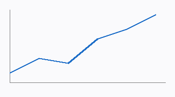
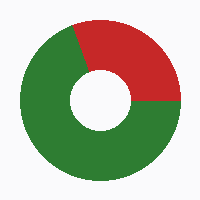

Q3 Operations Dashboard
Overview
Revenue
Operations
Alerts
Last 7 days
Last 30 days
This quarter
Live
Apply
Total Revenue
$4.28M
+12%
Active Incidents
17
+5
SLA Compliance
98.1%
+0.4%
Revenue Trend

Status Breakdown

Top Regions
Region
Revenue
Status
North
$1.9M
●
South
$1.1M
●
West
$1.28M
●
Widget Settings
Show deltas
Auto-refresh
Dark mode
Save